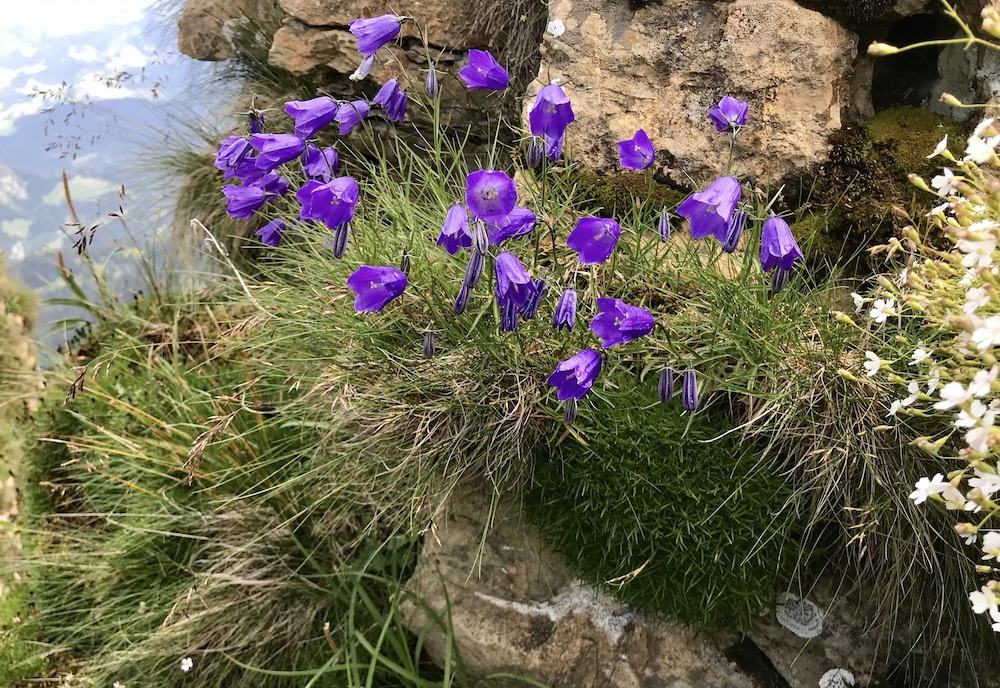

Preface - Evolution 303
Why write this text (or more precisely modify Michi Tobler’s OER)?
Though the last couple of iterations of the course I did not have a required text, I have found over the years that many students actually preferred having some type of text for the course. For those that prefer it, having a text provides a comforting anchor, something I certainly can understand. Considering the cost of college text books today, I considered it unconscionable to require an expensive text when I do not lecture from a text and would probably only cover around two-thirds of the material anyway.
That being the case, when I searched for a good OER for my students, there were few if any options that were at the level of rigor I was looking for. That is, EXCEPT for Michael Tobler’s Primer2Evolution. I thought Michi did a fantastic job on his OER, which in fact I used in a 200 level version of my course a couple of years back. Unfortunately I found that once again my style of lecturing was such that it did not follow Michi’s OER, which some students found a little offsetting, plus his wonderful addition of Case Studies and extensive use of R exercises at the end of every chapter (which I really, really liked) were a little daunting for most of our students.
Having now taught evolution for over 20 years, I have accumulated quite the load of notes, slides, images, and other resources, and harbored the intention of making these more available to my students through the years, though I never could find the time or medium to make it happen.
The logical conclusion for me then was to modify Michi’s work, building off his OER to develop a “hybrid” of sorts that might prove more appropriate for my students, yet retain the core of his outstanding efforts. When I reached out to Michi with my idea, he proved exceptionally collegial, receptive, and supportive, for which I am grateful beyond words.
What you see here is a modified version of Michael Tobler’s Primer2Evolution OER to match my approach to teaching evolution and with my students specifically in mind in terms of the content and level of the material. Some Chapters come directly from Michi’s P2E, others are hybrids composed of a mixture of my material and Michi’s, and others are just my doing. I make little effort in distinguishing the three, but will do so should I ever find the time later. This OER-like resource is meant to follow closely my course lectures and labs, so a lot of information may be glossed over since it will be covered in lecture, labs exercises (which are more akin to the European model of a recitation rather than bench work), and slides (which I make available to the class via the course management tool Canvas). It is not intended as a stand alone resource.
Toward the end of this Preface you will find Michi’s Preface (Note 1). I am including his original since this is more his OER as mine. However, any errors or mistakes are entirely my own doing, and for that I apologize ahead of time. The tenor of the OER clearly reflects my biased background in evolutionary biology having come from the Stony Brook school of evolutionary biology from the 1980s (IYKYK to coin a social media phrase). For that I make no apologies.
An Overview of the Semester
The semester, and accordingly this book, is structured into four parts, each with multiple chapters that build on each other. Each chapter corresponds to a weekly module.
Part 1: Introduction to the basic concepts
In the first part of our journey, we will establish the basics of evolutionary biology. 1 What evolution is introduces the concept of evolution, beginning with a discussion on evolution as an emergent property of life, how we define evolution, and based on this definition some important about evolution. We end the chapter with a discussion of evolution as a Scientific Theory, and how our definition of evolution relates to Darwin’s Theory of Evolution. In 2 A brief history of evolutionary thought, we continue the discussion of Darwin and his theory of evolution from an historical perspective, briefly tracing the history of evolutionary thought pre-Darwin, Darwin’s publishing his seminal work On The Origin Of Species, his contributions to evolutionary theory, the six components of what we now consider Darwin’s Theory of Evolution, and continuing on through post-Darwin, including the direction of the field today. We end the Chapter with a very brief overview of some important concepts to keep in mind concerning evolution and natural selection. In 3 Evidence for Evolution we briefly discuss the overwhelming evidence for evolution, touching briefly on the varied evidences that demonstrate evolution as the only scientific explanation for the diversity of life on this planet. We end this section by circling back to Darwin’s mechanism of natural selection in 4 How Natural Selection Works, focusing on how the hypotheses of Darwin to Wallace can be tested using a classic example of Galapagos finches, followed by a discussion on the nature of natural selection and how to think about how selection works.
Part 2: Evolutionary Trees and Phylogenetics
The second part explores one of the essential tools in understanding how evolution works, evolutionary trees. We begin by discussing the basics of evolutionary trees in 5 Understanding Evolutionary Trees, starting with what an evolutionary tree is, the anatomy and language used to describe trees, the types of trees, and how to interpret them correctly. We end the chapter with a discussion of how to map characters on evolutionary trees evoking the concept of parsimony and the importance of “tree thinking” in evolution. The next chapter 6 Estimating evolutionary trees provides a high fly-over of the methods used to construct evolutionary trees, the field of phylogenetics. We discuss the basic of tree estimation for both morphological and molecular characteristics, and end with a brief discussion of the uses of evolutionary trees today.
Part 3: Evolutionary Genetics
The third part takes a 21st century perspective on evolution and closes a critical gap in Darwin’s original ideas—namely, the mechanisms underlying heredity. We will integrate your knowledge of modern genetics with evolutionary principles to analyze changes in the genetic composition of populations through time. 7 Genes, mutation, and genetic variation discusses the fuel that drives evolution, mutation, taking a classical approach, but also briefly venturing into a more nuanced, contemporary view of mutation informed by recent findings in modern molecular biology. We will also breifly explore how different types of mutations impact the expression of phenotypic traits and provide the raw material for evolutionary change. In addition, we will learn how evolutionary biologists quantify genetic variation in populations and use that data to infer whether or not evolutionary forces are acting on a population. We then ask what happens to that variation caused by mutations taking a classical population genetics approach, beginning with how to calculate allele frequencies and the null model for evolution (8 Introduction: Evolutionary genetics), then build off that null model to discuss how the mechanisms of genetics drift (9 Genetic Drift), selection (10 Mechanisms that drive evolution: natural selection), mutation (11 Mutation), migration (12 Migration and forces combined), and a combination of these mechanims work to change allele frequencies in a population. We then shift our attention from these relatively simple, singe gene models to explore complex phenotypic characters in 13 The Evolution of Quantitative Traits, making the connection between the single gene models we just reviewed and complex phenotypic characters, the genome-phenome connection, and basic quantitative genetic approaches used to study the evolution of complex phenotypic traits controlled by many genes at once.
THE FOLLOWING NEEDS EDITING TO MATCH MY CLASS
Part 4: In Light Of Evolution
The fourth part of the book explores the outcomes of natural selection and the other evolutionary forces discussed in Part 3. In xxxxx, we will focus on how evolution has shaped the social interactions between individuals of the same species, learning about kin and sexual selection. Chapter XXXXX focuses on how we can infer adaptation in natural populations. We will explore the concept of phenotypic plasticity, why it can complicate the inference of adaptation, and how plasticity itself can be the outcome of adaptive evolution. In Chapter XXXXX we wrap all these concepts together to investigate how new species arise, and speciation as a gradual process that is shaped by the same evolutionary forces that influence the evolution of phenotypic traits within species. We end this section by then exploring how the mechanisms of evolution work at the molecular and genomic level, and the role development plays in the evolution of complex characters and species.
PART 5: Evolution At The Macro Level
Part 6: What About Us
The last part of the book focuses on the application of evolutionary theory in the context of human nature and human health. Chapters 12 and Chapter 13 explore how evolutionary principles are applied in modern medicine. We will discuss why we age and how modern lifestyles are connected to the development of a wide variety of health conditions commonly named “diseases of civilization”. In addition, we will explore how a better understanding of pathogen evolution allows for the development of concrete management strategies that can impact the spread of diseases. Finally, Chapter 14 includes an overview of human origins and discusses how the sequencing of ancient DNA has shed new light into our own history.
How to Use This Book
This book is not designed to provide a comprehensive overview of current evolutionary biology. Rather, it is supposed to provide a succinct introduction to evolutionary thought revolving around theory, evidence, and practice:
- I will introduce some of the theoretical cornerstones and core concepts of modern evolutionary biology. The goal is for you to be able to apply these concepts and articulate testable hypotheses that explain natural phenomena from an evolutionary perspective.
Note 1: Preface to Primer To Evolution
by Michael Tobler
In the Light of Evolution
“There is grandeur in this view of life, with its several powers, having been originally breathed by the Creator into a few forms or into one; and that, whilst this planet has gone cycling on according to the fixed law of gravity, from so simple a beginning endless forms most beautiful and most wonderful have been and are being evolved.”
― Darwin, 1859
The concluding sentence of Charles Darwin’s paradigm-shifting book “The Origin of Species” has stuck with me ever since I first read it in my freshman year of college. Back then, I was passionate about two things: the wildflowers of the Alps in my home country of Switzerland, and the fishes I kept in my aquaria. They both offered an incredible diversity of forms to explore. On the one hand, there were bell flowers (Campanula sp.; Figure @ref(fig:campanula)) and gentians (Gentiana sp.) with exuberantly large and colorful flowers, snowbells (Soldanella sp.) that pushed their flowers through a cover of snow, and willow (Salix sp.) brushes that barely managed to grow ankle-high in the many decades of exposure to the harsh mountain climates. On the other hand, there were the cichlid fishes of Lake Malawi. Over 1,000 species in a single lake, all carrying their developing young in their mouths but otherwise so different in their body morphology, coloration, and feeding habits. Some species specialize on scraping off scales from the bodies of other fish, others adapted to prey exclusively on fish fry, ramming mouth-brooding females in the throat and gobbling up their offspring as they are released. It’s so wild that it seemed made up! I could get lost in exploring all the magnificent and weird things in nature. I still do sometimes; whether it’s by stomping around creeks, observing my fish, or browsing through books. And all along I have kept wondering: Why are there all of these forms? How do these critters function in their habitats? And how did they come about?
Studying evolutionary biology has helped me to address these questions. As a scientific discipline, evolutionary biology fundamentally seeks to understand biodiversity and its origins. Evolution is the unifying theory of biology because it provides a simple explanation for the patterns of similarities and differences we can observe among all living things, which ultimately forms the framework in which researchers across disciplines address questions about the living world. It does so by addressing both proximate and ultimate causes of organismal function. Proximate questions primarily focus on explaining organismal function in terms of intrinsic and environmental factors (these are sometimes referred to how questions). For example, when we consider a peacocks magnificent tail feathers and coloration, how did environmental cues and changes in hormone levels initiate the development of these secondary sexual traits, and what genes might be involved in controlling there expression? In contrast, ultimate questions explain organismal function in terms of the evolutionary forces acting on them (sometimes referred to as why questions): why did the peacock evolve its exuberant traits, what are the traits’ functions and how do they impact the fitness of its carrier?
Understanding how organisms work, how their traits allow them to survive in the peculiar environments they find themselves in, and how those traits came to be did not take out the wonder out of my fascination with nature; rather, it filled me with a new level of appreciation for the intricacies of life. I think that is the grandeur Darwin was alluding to at the end of The Origin of Species. Or, as another famous evolutionary biologist put it:
“Nothing in biology makes sense except in the light of evolution. […] Seen in the light of evolution, biology is, perhaps, intellectually the most satisfying and inspiring science. Without that light it becomes a pile of sundry facts, some of them interesting or curious, but making no meaningful picture as a whole.”
― Dobzhansky, 1973
Beyond Understanding Biodiversity
Simply put, evolution is the change in heritable traits of populations that occurs across successive generations. Today, we have a nuanced understanding of the mechanisms that contribute to the evolutionary process. We are disentangling the genomic basis of traits relevant for organismal function, we are identifying the evolutionary forces—like natural selection—that determine what traits are passed on from one generation to the next, and we try to link these mechanisms to observable evolutionary outcomes, like adaptation, cooperation, and speciation. Applying these approaches has allowed us to explore many aspects of biodiversity, including the reasons behind sexual dimorphism, puzzling social behaviors, variation in life history traits, and even our own human origins.
The scientific reach of evolutionary biology, however, has long since eclipsed a basic understanding of the origins and function of biodiversity; the power of evolutionary analyses is now applied to address some of the major scientific challenges we face as a society: How will nature respond to the rapid environmental changes caused by human activities? How do we safeguard food production for a rapidly growing population? Why are there cancers and other diseases, and what can their origins tell us about prevention and treatment? How do we limit the spread of antibiotic-resistant pathogens? And how can we predict and limit the spread of emerging infectious diseases?
During this semester, we will cover both basic and applied aspects of evolution. So whether you are a bit of a naturalist—like myself—who tries to better understand the world, or whether you aspire to address some of the major environmental and public health issues we face as a society, I hope you will find something to take away from this class. :::